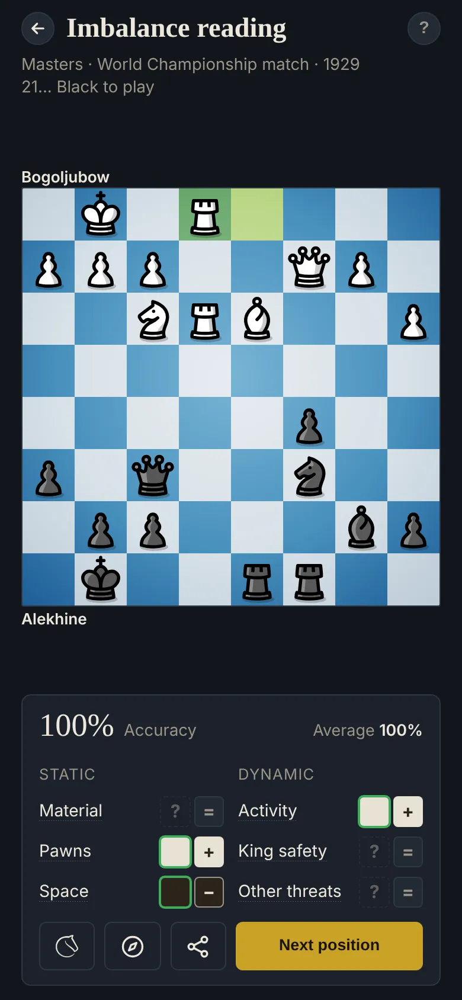

Chess imbalances: learn to read a position
Every position is a set of differences between the two sides: an extra pawn, a weak square, a safer king. Strong players don't weigh them all. They spot the few that decide the game, and they plan around those.

What an imbalance is
An imbalance is any lasting or temporary difference between White's and Black's position. The idea was popularised by Jeremy Silman: instead of looking for a move straight away, first list what is different, then choose the plan that makes the most of your edges.
The exercise uses six of them, each counted on the board the same way every time:
- Material: pawn 1, knight 3, bishop 3, rook 5, queen 9; the bishop pair adds half a pawn.
- Pawns: passed and connected pawns count more the further they've come; isolated, doubled and backward pawns count against.
- Space: pawns and safe squares behind them in the centre of the board (not counted once few pieces are left).
- Activity: the safe squares your knights, bishops, rooks and queen reach, plus outposts and open files. Early in the game, Development takes its place.
- King safety: pawns sheltering the king against enemy pieces aiming at it. Once queens are off, King activity takes its place: in the endgame the king becomes a fighter.
- Other threats: material you can win right now.
Material, Pawns and Space are static: they last. Activity, King safety and threats are dynamic: they can disappear in a few moves, so they call for action.
How the exercise works
You get a position from a master game, or from one of your own games. Choose the 3 imbalances that decide it, and for each one say who has the edge, White or Black.
Then the review shows every imbalance with its size: = balanced, + a small edge, ++ a big one, in white for White and in black for Black. You don't guess sizes, but the ++ ones are the edges to find first. Each imbalance has its own thresholds: across the master positions, about half are =, a third + and one in six ++.
Each of your choices counts for a third of the score: one of the three biggest edges on the right side gets full points, a smaller edge on the right side gets half, a balanced one or the wrong side gets nothing. Tap any imbalance to see on the board how it was counted.
Tips
- Look for the big edges first, then the clearest small ones.
- Don't choose an imbalance that's balanced: it scores nothing.
- Grades don't simply add up. One big imbalance can outweigh several small ones, and tactics beat them all.
Why it helps
Reading imbalances is the step before every plan. It tells you whether to trade pieces, where to attack, which pawn to target, and when to hurry. Done on hundreds of positions, it becomes a habit you bring to your own games. The Plan finder takes the next step: from the imbalances to a plan.
Try it
Imbalance reading is one of four exercises on ChessStrategy.org, free and without ads. Positions come from master games, such as World Championship matches, and from your own Lichess and Chess.com games. Answers are checked with fixed counting rules and Stockfish, which runs in your browser.